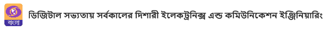

Reviewer of 1 manuscripts in Materials Chemistry and Physics, Elsevier
in 2023.
Reviewer of 1 manuscripts in Materials Chemistry and Physics, Elsevier
in 2023.
Reviewer of 2 manuscripts in RSC Advances in 2024.
Reviewer of 5 manuscripts in RSC Advances in 2023.
Reviewer of 1 manuscript in Scientific Reports, Springer Nature in
2023.
Reviewer of 1 manuscript in Discover Nano, Springer in 2023.
Reviewer of 1 manuscript in Journal of Inorganic and Organometallic
Polymers and Materials, Springer in 2023.
Reviewer of 1 manuscript in Polycyclic Aromatic Compound, Taylors and
Francis in 2023.
Reviewer of 2 manuscript in Journal of Materials Chemistry B, RSC in
2022.
Reviewer of 2 manuscript in Applied Organometallic Chemistry- Wiley
Online Library in 2022.
Reviewer of 1 manuscript in RSC Advances in 2022.
Reviewer of 1manuscript in GNIT Research Mantra Journal of Science &
Technology in 2021.
Reviewer of 2 manuscripts in Journal of Chemical Technology &
Biotechnology in 2019.
Reviewer of 1manuscript in Journal of Chemical Technology &
Biotechnology in 2018.
Panel Discussion
Dr. Soumik Podder as Speaker, Ki Hote Chai Episode, DD Bangla LIVE,
7th April 2023.

Administrative Activity
Member of NAAC Mentor Institute (Guru Nanak Institute of Technology)
for implementation of NAAC at Mentee Institute ( Government College of
Engineering and Textile Technology, Serampore, West Bengal) and Govt.
College of Engineering & Textile Technology, Berhampore in
2023.
Evaluator in Model Display at FoodEnvision organized by Food
Technology, Guru Nanak Institute of Technology, 02nd September
2022, Kolkata.
College Blue Scrutiny Committee member for JIS ACADEMIC AWARDS-JIS
SAMMAN 2023.
Core Committee (E&C) member of Forum of Scientist Engineers &
Technologists (FOSET) Academic Meet 2022.
Chair Person/ Moderator of Track IV in Institution’s Innovation
Council (IIC), MOE, Govt. of India Regional Meet at Guru Nanak
Institute of Technology, Kolkata, 2022.
Session Chair of Track III in Technical Paper Presentation at AICTE
Sponsored International Conference on Communication, Computing and
Microwave Technology organized by Department of Electronics and
Communication Engineering, Guru Nanak Institute of Technology,
Kolkata, 2022
Co-coordinator of NAAC Committee (Criteria 3) at Guru Nanak Institute
of Technology, Kolkata in 2022
Editor, GNIT Research Mantra Journal of Science & Technology in
2021
Coordinator, Diploma Electronics and Telecommunication Engineering of
Guru Nanak Institute of Technology, Kolkata ( 01-04-2021 to
till now)
Coordinator, Syllabus Design of Block Chain for 8th Semester ECE, JIS
Group, Kolkata
Room Coordinator, Track 1B of 2nd International Conference on
Frontiers in Engineering, Management and Applied Science (FEMAS
2021) organised by IQAC, IIC Cell, Guru Nanak Institute of
Technology, Kolkata on 28th -29th January 2021
Coordinator, Syllabus Design of Electronic Devices, ECE Dept., C V
Raman Global University, Odissa
Additional Academic Responsibilities
Session Chair of AICTE Sponsored International Conference on
Communication, Computing and Nano-Microwave Technology held at Guru
Nanak Institute of Technology, Kolkata from 08-09th July, 2022.
Session Chair, Track 4, 2nd International Conference on Frontiers in
Engineering, Management and Applied Science (FEMAS 2021)
organised by IQAC, IIC Cell, Guru Nanak Institute of Technology,
Kolkata on 28th -29th January 2021
Paper Setter for End Semester (Even) Examination June 2022 and
June 2021
Paper Setter for End Semester (Odd) Examination December
2021 and December 2020 and December 2019.
Examiner for End Semester (Even) Examination, June 2022 ,
2021, 2020.
Examiner for End Semester (Odd) Examination, December 2021,
2020 and 2019.
Scrutinizer for End Semester Special Examination (2019)
Examiner II for rechecking of Summer Quarter Examination (2019)
Examiner for End Semester Special Examination (2019).
Reviewer for End Semester (Odd) Examination 2019.
Invited Lectures
Planning and Decision Making in AI at One Week Student Development
Programme' on “Application of Data Science, AI & Machine learning
using python organised by ECE Dept.,Guru Nanak Institute of
Technology, Kolkata on 21st April 2021
Workshop on Citation and H-Index for Researchers: Calculate Your
Research Footprint
organized by R&D Cell, Guru Nanak Institute of
Technology, Kolkata on 27.03.2021.
Faculty Development Program Coordinated
Faculty Development Program on
Electronic Devices, Image Processing and Machine
Learning
in association with Institute of Engineers (India) organized by Department of
Electronics and Communication Engineering, Guru Nanak Institute of Technology,
Kolkata from 11th
-15th August 2020.
Short Term Training Program Organized
AICTE Sponsored Short Term Training Program on “
Theory & Applications of Machine
Learning and Data Analytics Technique
” from 16th
-21st December 2019, organized by C
V Raman College if Engineering, Odisha,